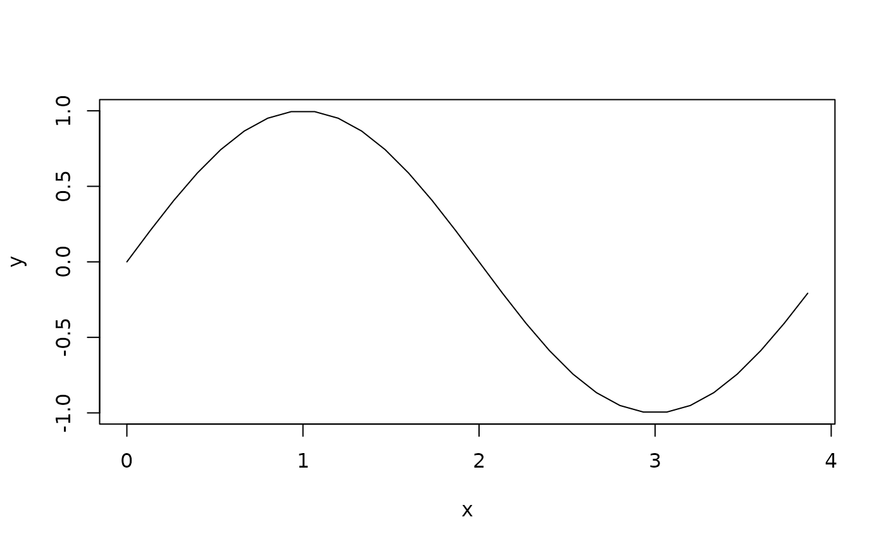

These are functions that build a pattern that can be used as the distort
argument in arrow geoms. They produce one 'oscillation' that will be repeated
to distort a line.
Usage
distort_sinewave(length = 4, width = 2, n = 30L)
distort_sawtooth(length = 4, width = 2)
distort_squarewave(length = 4, width = 2)Arguments
- length
A positive
numeric(1)setting the length along the path in millimetres that one repetition of the distortion occupies. Actual length may end up slightly wider to cover a remainder length.- width
A
numeric(1)setting the width (amplitude) of the distortion in millimetres. Negative values can be used to flip the distortion.- n
An
integer(1)setting the number of vertices to use for the path.
Details
It is possible to write your own distort_*() function. The assumption
is that an oscillation starts at the (0, 0) coordinate and ends at the
(length, 0) coordinate.
The exact length of an oscillation will be fitted based on the arc-length of the path it will be placed on. If the arc-length will not accommodate an exact integer number of oscillations, the oscillations will be stretched to cover the whole arc-length.
Functions
distort_sinewave(): Follows a sine waveform.distort_sawtooth(): Follows a triangular waveform.distort_squarewave(): Follows a square waveform.
Examples
plot(distort_sinewave(), type = 'l')
